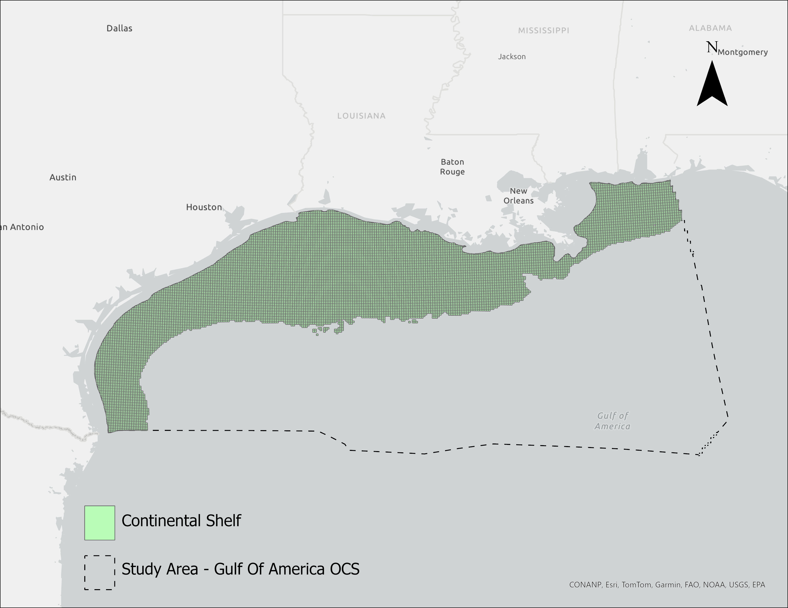
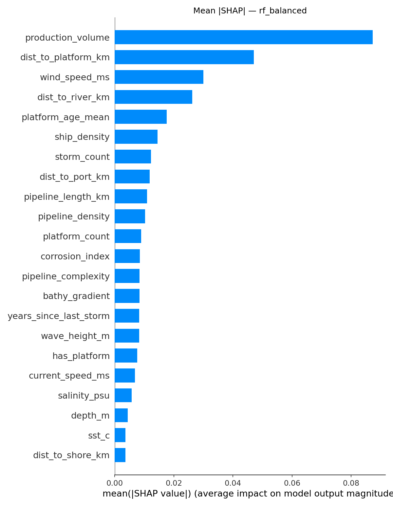

Offshore oil spills in the Gulf of America continental shelf are some of the most environmentally and economically costly events in the petroleum industry, yet most research related to machine learning on the subject is geared towards detection rather than prediction. Detection means classifying pixels in synthetic aperture radar (SAR) or optical satellite imagery as oil or non-oil after a spill has already occurred (Das et al., 2023; Yang et al., 2022). That work is valuable for response and monitoring, but it does not help to prevent spills in the first place by identifying the locations where they are most likely to happen.
Something that the literature has largely not done is use the same datasets to model where these spills are the most likely to occur in the first place. That is the main gap that this project addresses. The SORS (Spatial Oil Spill Risk Susceptibility) model, a machine learning framework that reframes offshore spill risk as spatial occurrence probability. The framework makes use of 12 federal and international datasets that include infrastructure, environmental, operational, and spatial context variables and puts it into a 3km x 3km grid covering the Western and Central Gulf of America Outer Continental Shelf, and then trains three classifiers (Logistic Regression, Random Forest, and XGBoost) to estimate the spatial probability of spill occurrence in each cell.
The problem being addressed here is interesting since oil spills are so rare. In the study area, about 2.89% of grid cells contain a historical spill record, which creates a large class imbalance of roughly 34:1. This report presents the SORS framework and its iterative refinement. The pipeline uses spatial block cross-validation to prevent AUC inflation produced by random splits, a diagnostic-driven feature loop guided by Moran's I on residuals, isotonic probability calibration that reduced log loss by approximately seventy-two percent, and SHAP-based interpretation that identifies production volume as the dominant risk driver. An important note is that at the time of presentation, the model used a 30-feature uncalibrated model whereas the improved version, based on class and committee feedback, reflects a refined 13-feature model that has been calibrated with no loss of discrimination ability.
The literature on oil spill analysis spans roughly four decades and falls under three main modes of inquiry. They consist of treating GIS as a monitoring and integration platform, using it within environmental sensitivity index mapping, and other static decision frameworks, and finally, the combination of remote sensing with machine learning to improve detection. Across all three, GIS has functioned as an integration platform, a presentation tool, and a post-event analytical environment, but it has almost never been used under a predictive foundation for occurrence probability, especially within oil and gas applications..
Early literature as it pertains to GIS-based oil spill work used GIS mainly as an integration platform for spatial analysis. Ivanov and Zatyagalova (2008) combined synthetic aperture radar imagery with shoreline and infrastructure data to characterize the extent of detected spills and infer probable sources. In their framework, GIS served as a spatial hub for documenting events that had already happened. Xu et al. (2013) built a monitoring system that used GIS for spatial statistical reporting of automated spill detection, but again the role was presentation rather than modeling. Liu et al. (2008) and Hou and Zhang (2016) describe similar systems in which GIS sits as the user-facing layer over broader emergency-response architectures. Jha and Gao (2008) described frameworks related to contingency planning where GIS acted as mode of support for compliance and coordination, but did not produce any sort of risk estimates. Gitis et al. (2015) sketch the broader concept of dynamic GIS for spatial process monitoring; predictive analytics are anticipated rather than implemented.
The literature also commonly looks at risk through static decision frameworks. Vafai et al. (2012) applied a fuzzy multi-criteria decision-making approach to shoreline sensitivity using expert-derived criteria to produce a unique sensitivity surface. D'Affonseca et al. (2023) review and critique the ESI approach. They then argue that cartographic sensitivity maps traditionally are not ample enough for managing dynamic risks, and thus propose a framework that combines real-time data with accident risk models. Balogun et al. (2021) and Bayramov et al. (2018) paired GIS with trajectory simulation to model environmental vulnerability under the assumption that the spill location is already known. Guillen et al. (2004) used multivariate statistics alongside trajectory model output to outline common-risk. These methods helped to enhance the cartographic representation of consequence, but each one still treats risk as the severity of impact once a spill has occurred. They also heavily depend on expert weights or predetermined launch points, which can limit any predictive value in regions where the spill origins themselves are uncertain.
A third focus of the literature has applied modern machine learning to oil spill problems and made significant gains in detection performance. Das et al. (2023) used convolutional neural networks to classify SAR imagery and separate genuine spills from look-alike features. Yang et al. (2022) developed deep learning detectors built on Sentinel-1 imagery. Habibie et al. (2025) compared Sentinel-1 classification methods using Random Forest, XGBoost, and Artificial Neural Networks. Lau and Huang (2024) combined deep learning segmentation with GIS verification for nearshore monitoring. Yang, Chen, and Lee (2025) introduced what they called GOOSM, a GIS-based offshore spill management tool that could tie response-time scenario modeling to decision support. The contributions made here validate the idea that machine learning is effective on oil spill imagery, but they all apply it to detection after a spill has occurred. Adjacently, Triezenberg and Pires de Lima (2024) applied gradient-boosted decision trees to offshore landslide susceptibility mapping in the Gulf of America. Their work proved that machine learning can produce valid and defensible spatial susceptibility surfaces for rare offshore hazards.
The study region covers the Western and Central Gulf of America Outer Continental Shelf (OCS) Planning Areas as described by the BOEM. These are what sets the outer boundary for the project as they define the spatial unit at which BOEM publishes the most important items such as infrastructure inventories, lease block geometries, and offshore boundary lines. It is also the unit at which (BSEE) reports spill incidents. The spatial analysis unit is a regular square grid that covers the entire study area. A 3km x 3km size was chosen as the class imbalance that comes with it, 1:88 before the shelf filter and 1:35 after it, is the smallest size available that would still be appropriate for machine learning techniques. The 3km cell size is also most fair when considering the native resolution of many variables being used, so the grid avoids artificially over-resolving features. Each cell is labeled with a binary classification: spill = 1 if any petroleum spill of 10 barrels or more occurred inside it, spill = 0 otherwise.

There were a total of 13 predictor features per cell engineered across the four categories. Infrastructure features include distance to nearest platform, platform count, mean platform age, total pipeline length, and pipeline density. Environmental features include mean wind speed, hurricane count within 100km of a cell, and years since the most recent hurricane, all of which came from ERA5 reanalysis and HURDAT2. Operational features include cumulative oil production, AIS vessel traffic density, and distance to nearest port. Spatial context features include distance to the nearest major river mouth and bathymetric gradient. This final set of features was informed by a broader version that included 17 additional environmental and infrastructure candidates, 30 total, that did not contribute anything truly meaningful, as they showed low SHAP contribution or high collinearity with a stronger predictor.
At 2.89% prevalence, an unbalanced classifier will almost always predict the majority class for every cell. In order to counteract this, scikit-learn's class_weight='balanced' method applied an inverse-frequency penalty of approximately 34:1.
Spill occurrence, infrastructure, and environmental predictors are all ones which are generally strongly spatially autocorrelated, so a standard random k-fold CV would likely leak geographic information between training and test sets, resulting in inflated performance estimates. Following the literature laid out by Roberts et al. (2017) and Ploton et al. (2020), this study employed a spatial block cross-validation scheme which included six longitudinal blocks running west to east across the shelf (Figure 1). Five of these six blocks served as CV folds whereas the sixth (Block 1, spanning the Texas-Louisiana border) is permanently held out until the final evaluation after model selection. This block was chosen because it has a moderate spill rate (0.95%) compared to the others, has a sufficient sample size (29 spills) and would have minimal impact on training data volume.
The fold spill rates span as low as 0.21% in Far West Texas to 7.57% in East Louisiana and Mississippi. That variation is not a flaw, but rather exists to reflect the real geographic concentration of spills. If we were to equalize spill rates across folds, it would require mixing cells from different geographic regions within the same fold, which would reintroduce the spatial leakage the scheme was specifically designed to prevent.
Although Random Forest was selected as the primary classifier, it can produce well-discriminating probability estimates, but it is sometimes highly overconfident probabilities, too. To correct this, isotonic regression was fitted on out-of-fold predictions and then applied to the final probability outputs (Niculescu-Mizil & Caruana, 2005). The results showed that calibration reduced log loss from 0.429 to 0.120 (~72 percent reduction), while ROC AUC was still unchanged at 0.742.
There were a total of three classifiers trained on identical spatial CV folds: Logistic Regression, Random Forest, and XGBoost. Random Forest follows Breiman (2001); XGBoost follows Chen and Guestrin (2016). The main evaluation metrics that were used include ROC AUC (reported as per-fold mean with standard deviation plus a pooled out-of-fold AUC for reference), F1 score at multiple operating thresholds, precision–recall AUC, log loss, and confusion matrices at the chosen thresholds. SHAP values were computed using TreeExplainer on the Random Forest model.
Table 1 summarizes the 30-feature set model's performance across the three of the classifiers. Random Forest achieved the highest mean per-fold spatial CV ROC AUC at 0.7426, followed by XGBoost at 0.7138 and Logistic Regression at 0.7108. Holdout AUCs on Block 1 were 0.729, 0.725, and 0.662 respectively.
Table 1.
| Model | Features | CV AUC (mean ± SD) | Holdout AUC | F1 (F1-opt) | PR-AUC | Log loss |
|---|---|---|---|---|---|---|
| Logistic Regression | 30 | 0.711 ± 0.138 | 0.662 | — | — | — |
| XGBoost | 30 | 0.714 ± 0.097 | 0.725 | — | — | — |
| Random Forest | 30 | 0.743 ± 0.076 | 0.729 | — | — | — |
| Random Forest (final) | 13 | 0.742 ± 0.076 | 0.729 | 0.296 | 0.206 | 0.120 |
On the reduced 13-feature set, Random Forest's per-fold mean AUC essentially held at 0.7423 and its holdout AUC stayed identical at 0.7285, confirming that the features dropped for the final model truly contributed largely nothing to performance. Pooled out-of-fold AUC on the 13-feature Random Forest was 0.822. This is higher than the per-fold mean because pooling generally rewards correct cell-level rankings across folds with unequal spill rates. This means that the per-fold mean is the more conservative spatial generalization metric and is used as the headline number.
As for per-fold AUC, it varied quite a bit across all the CV blocks, ranging from 0.626 in Far West Texas to 0.824 in East Louisiana. The variation is most correlated with spill density since folds that had more positive cases generally produced the more stable and usually higher metrics, and reflect spatial non-stationarity more realistically. The model is more consistent when it comes to regions that are more dense in terms of infrastructure when compared to those in less developed ones. Additionally, random k-fold CV on the same dataset produced an AUC of 0.836, compared with 0.743 for spatial CV, which is a 9.3-point inflation that could have led to a seriously misleading interpretation.
F1 scores and precision–recall AUCs are very modest, and propose some serious questions at first glance. At the F1-optimal threshold of 0.714, the final Random Forest achieves a pooled out-of-fold F1 of 0.296, precision of 0.290, and recall of 0.302. Pooled OOF PR-AUC is 0.206. These numbers sit near the theoretical F1 ceiling at the shelf's 2.89% prevalence, meaning that at the observed pooled AUC of 0.81, the maximum attainable F1 is approximately 0.31. The model is, therefore, already operating near the upper bound of what binary classification can honestly achieve at this base rate.
Isotonic calibration produced the largest improvement in terms of refinement. Log loss on the Random Forest model dropped from 0.429 (raw probabilities) to 0.120 (calibrated), a 72% reduction. Raw probabilities ranged from 0.018 to 0.960 with a mean of 0.294 on the shelf and calibrated probabilities range from 0.000 to 0.571 with a mean of 0.035, aligning with the true 2.89% shelf prevalence. The original raw model was a bit overconfident, but this calibration corrected it.
SHAP values were computed for the primary model across all the grid cells. Figure 3 shows the SHAP mean absolute values for the Random Forest model, ranked from highest to lowest importance. The magnitude of the top-ranked feature, production volume, is a most striking result, as it has a mean |SHAP| of 0.0873, about 1.8 times the second-ranked feature, distance to platform (0.0471), and almost three times the third.
Infrastructure features made up about 43% of mean |SHAP| contribution, environmental features for 37%, and operational/spatial features together for around 20%. That category-level split understates production volume's role because of its outsized individual SHAP value, meaning when cells are assigned to the category with the largest summed absolute SHAP, 74.6% of shelf cells are dominated by operational and spatial factors. This is mainly because of how dominant production volume's contribution is, as it pushes that category above the others in most high-production cells. The most substantial result from the SHAP analysis is that operation throughput pressure is the primary driver over infrastructure proximity, which challenges the literature saying that spills being close to platforms is the most dominant driver of oil spill risk. This is not far off of what the model here says, but the difference is that SORS says that spills are more closely correlated to cumulative throughput, a likely reasoning being concentrated mechanical and chemical stress on infrastructure over time.

The project contributes to GIScience and spatial hazard analysis in a few ways. The first main contribution is conceptual at heart, in the sense that the project works to reframe offshore oil spill risk from consequence severity to occurrence probability, which helps to address the gap in existing GIS-spill literature that has not been formalized. Although several techniques that have been used, such as detection and trajectory modeling, are significant lines of work, they are already assuming a spill. The framework also brings together three components that have never been combined for the sake of offshore spill prediction: multi-source and multi-resolution data synthesis, supervised machine learning, and validation under longitudinal spatial block cross-validation. The validation choice matters. As established earlier on, the standard random cross-validation technique generally inflates performance estimates, especially on spatially autocorrelated data (Roberts et al., 2017; Ploton et al., 2020). The absence of spatial validation in almost all of the existing GIS-spill literature reviewed is a methodological weakness that this project corrects.
There are a couple limitations that warrant some acknowledgment. Moran's I on residuals remains at 0.500 (p < 0.001), which does technically mean that substantial spatial structure in prediction errors persists even after the feature list was expanded. Some of that structure likely comes from predictors not available in public spatial datasets, such as pipeline wall thickness, cathodic protection status, operator-level inspection and maintenance records, and real-time operational status. Access to more proprietary-level operator data would very likely reduce the residual autocorrelation seen and improve AUC. For similar reasons, the framework must also assume temporal stationarity, meaning most features are long-term averages or cumulative totals. The model predicts a long-run spatial susceptibility rather than time-varying risk. The storm exposure features can partially capture some episodic loading, but the pipeline was not necessarily meant to handle seasonal production variation, shifting regulatory environments, or changes in maintenance intensity over time.